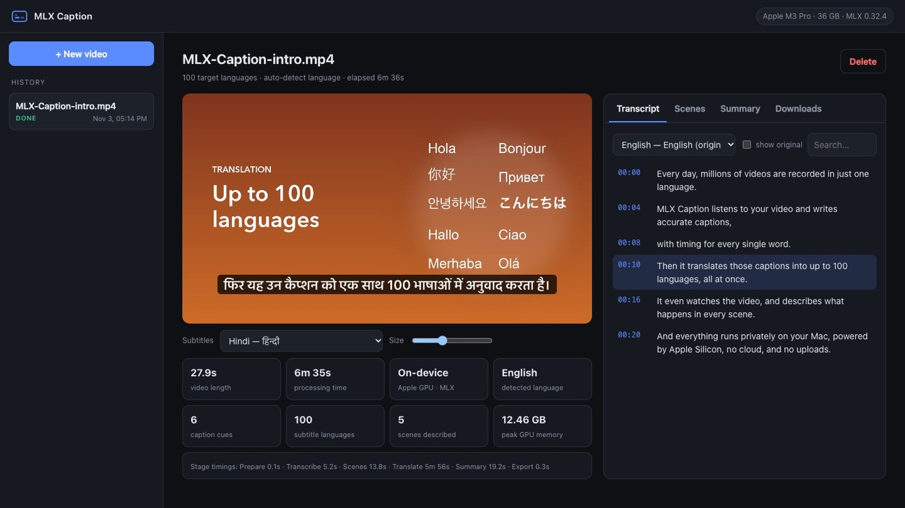
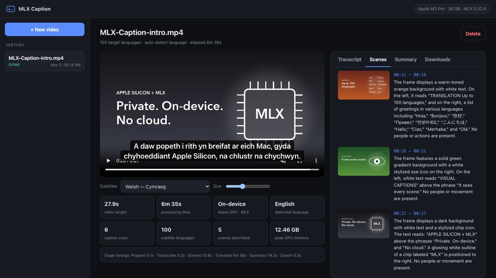
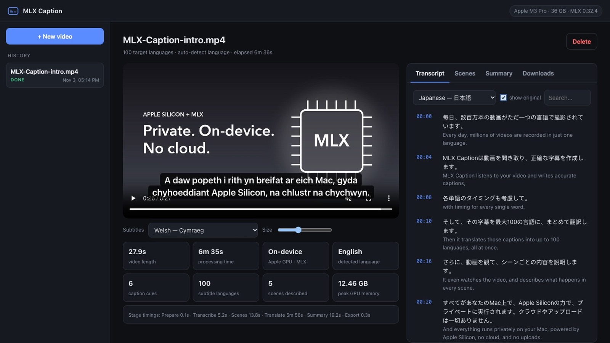
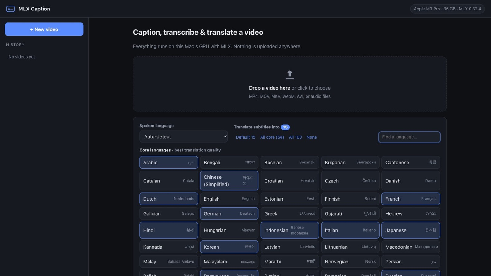

Mac app · Apple silicon
Subtitles in 100 languages, made on your Mac.
Drop in a video. MLX Caption transcribes it, times every subtitle and translates it into as many languages as you need. Nothing is uploaded, and there are no per-minute fees.
Your first 5 videos are free, with every feature. After that it's $49 once, with a 14-day refund. Needs an Apple silicon Mac with macOS 14 or newer.
A real screen recording, not a mock-up: one 28-second video becomes subtitles in all 100 languages, with scene descriptions and a summary.
What it does
One video in. Everything out.
Six jobs you'd normally split across several paid tools, done in one pass on your own machine.
Accurate transcription
Whisper large-v3 turbo with timing for every word. It detects the spoken language automatically.
Up to 100 languages at once
Pick the languages and translate them together. Timing is kept line by line, so every track stays in sync.
Scene descriptions
The app finds every shot and describes what's on screen. Useful for accessibility and for searching footage.
Summary and chapters
A title, a summary, key points and chapter timestamps you can paste into a video description.
Searchable transcript
Click any line to jump to that moment. Compare a translation side by side with the original.
Files for every editor
SRT and VTT for YouTube, Premiere, Final Cut and DaVinci, a text transcript, and an MP4 with every language as a selectable track. Burn-in is optional.
Inside the app
See it working.
These are screenshots of the app processing its own intro video on an Apple M3 Pro.




Private by design
Your footage never leaves the machine.
The speech, translation and vision models all run on your Mac's GPU through Apple's MLX framework. That makes MLX Caption a fit for client work, unreleased videos and confidential recordings. After the one-time model download it works offline.
- Speech to textWhisper large-v3 turbo (mlx-whisper), word-level timestamps
- TranslationGemma 3 12B. Up to 16 languages are decoded together in one batch
- Scene captionsQwen3-VL describes one keyframe per shot
- Measured speed28-second video on an M3 Pro: transcribed in 5.2 s. All 100 languages, scenes and summary: 6 min 35 s
- MemoryOne large model is loaded at a time. Smaller models are chosen automatically on 8–16 GB Macs
Requirements
Will it run on my Mac?
- ChipApple silicon: M1, M2, M3, M4 or newer. Intel Macs are not supported
- macOS14 Sonoma or newer
- Memory16 GB recommended. 8 GB works with the smaller models
- Disk8–15 GB free for the AI models, downloaded once inside the app
- InputMP4, MOV, MKV, WebM, AVI and audio files
Questions
Before you buy.
Straight answers, including the parts that aren't perfect yet.
Can I try it before I buy?
Yes. The download is the full app. Without a license key it captions your first 5 videos with every feature switched on, and videos that fail or that you cancel don't count. You don't need an account, an email address or a card. After 5 videos it asks for a license key; everything you already made stays available.
How good are the translations?
54 "core" languages translate at high quality, including Spanish, French, German, Portuguese, Russian, Chinese, Japanese, Korean, Arabic, Hindi, Urdu, Turkish and Indonesian. The other 46 are lower-resource languages such as Amharic, Khmer, Welsh and Yoruba, where quality varies. All translations are AI-generated, so review them before you publish.
How long does a video take?
Transcription is fast: a 28-second clip took 5.2 seconds on an M3 Pro. Translation is the slow part and grows with the number of languages you pick. The same clip took about 6 minutes for all 99 other languages together. Most people pick a handful of languages, which is much quicker. Older or 8 GB Macs are slower.
Will macOS warn me when I open it?
Yes, once. MLX Caption is sold outside the Mac App Store, so the first time you open it macOS asks you to confirm in System Settings → Privacy & Security → "Open Anyway". The download includes a short guide with the exact steps.
Does it need the internet?
Only for setup. The first launch installs the app's components and you download the AI models once (about 6.5 GB on 8–16 GB Macs, about 13 GB on 24 GB+ Macs). After that it works offline. If you buy a license, the app sends your license key (nothing else) to Gumroad when you activate it and about once a week after that. If you're offline at the time, it carries on working.
How does the license key work?
When you buy, Gumroad shows a license key on your receipt and emails it to you. In the app, click "Enter license key", paste it and click Activate. The trial and the paid app are the same download, so there's nothing to reinstall.
Is it a subscription?
No. You pay $49 once and can process as many videos as you like. There are no per-minute or per-video charges.
What if it doesn't work on my Mac?
You have 14 days to ask for a refund. Reply to your purchase email and you'll get your money back.